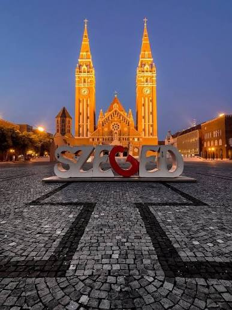

Idén ősszel a 11. évfolyam egy felejthetetlen egynapos tanulmányi kirándulásra utazik a Napfény Városába, Szegedre. Várunk mindenkit szeretettel erre a közös élményre, ahol a kultúra és a kikapcsolódás kéz a kézben jár! Kérjük, hogy a részletek áttekintése után töltsétek ki az oldal alján található jelentkezési űrlapot!
„A közös utazások nemcsak a tudásunkat gyarapítják, hanem az osztályközösséget is igazán összekovácsolják.” – Kovács Anna

Ha többet szeretnél megtudni a városról, olvasd el a Szeged Wikipédia-oldalt!
| Tétel | Ár |
|---|---|
| Utazás | 2500 Ft |
| Belépő | 1800 Ft |
| Ebéd | 2200 Ft |
| Összesen: 6500 Ft | |